STREAM Studio 软件案例STREAM Studio case studies
从玉米田、热带雨林到城市街区与延庆山地，用实际软件场景和模拟图件，展示三维结构如何影响光照、地表温度与局地风场。From maize fields and tropical rainforests to urban blocks and the Yanqing mountains, explore how 3D structure shapes light, surface temperature and local wind fields through software scenes and simulation figures.
STREAM案例 | 作物光热转换的物理桥梁STREAM case | Linking crop light and heat through physics
把一片玉米田搬进电脑，从整片田看到每个叶片面元。StreamStudio将三维作物结构、辐射传输与能量平衡联系起来，展现叶片受光、温度以及感热和潜热的空间差异。多阶段株型与时间驱动计算相结合，为组织全生长季作物模拟提供基础。Bring a maize field into a 3D scene and trace its behavior down to individual leaf facets. StreamStudio links crop structure, radiative transfer and energy balance to reveal spatial differences in light, temperature, sensible heat and latent heat. Multiple growth-stage geometries and time-dependent forcing provide a basis for organizing full-season simulations.
- 场景构建Scene setup
- 场景1—4采用从幼苗到成株的四种玉米株型，原始株高约0.39、0.66、1.25、1.97米。每个场景为8行×每行9株，共72株；范围5.2×3.0米，行距0.60米、株距0.25米，土壤网格目标尺度0.25米。Scenes 1–4 use four maize geometries with native heights of approximately 0.39, 0.66, 1.25 and 1.97 m. Each scene contains 72 plants in 8 rows of 9, over 5.2 × 3.0 m, with 0.60 m between rows, 0.25 m between plants and a target soil grid size of 0.25 m.
- 面元结果Facet-level outputs
- 使用面元能量平衡 eFacetEB，提取中央3×3株的温度、光合有效辐射PAR、感热H和潜热LE，并按0.10米高度分层计算面积加权剖面。图示为DOY214 12:20；PAR为双面入射PPFD之和，H和LE按单面几何叶面积计。The eFacetEB solver provides temperature, PAR, sensible heat H and latent heat LE for the central 3 × 3 plants. Vertical profiles use 0.10 m bins and facet-area weighting. Figures show DOY 214 at 12:20. PAR sums incident PPFD on both sides; H and LE are expressed per unit one-sided geometric leaf area.
- 光热垂直差异Vertical light and temperature gradients
- 场景4中，低于0.7米的面元平均叶温为26.55℃，1.4米及以上为32.51℃；平均PAR由142增至601 μmol m⁻² s⁻¹。上层整体受光更强、温度更高，局部起伏反映叶片倾角、遮挡和能量交换的共同作用。In scene 4, area-weighted leaf temperature rises from 26.55 °C below 0.7 m to 32.51 °C at or above 1.4 m. Mean PAR rises from 142 to 601 μmol m⁻² s⁻¹. Local variation reflects leaf orientation, shading and energy exchange.
- Vcmax响应Response to Vcmax
- 对比Vcmax=20、40、60，仅保留基准Vcmax=60中PAR为600—1800 μmol m⁻² s⁻¹的同一组1053个面元。Vcmax从20增至60时，该组面积加权平均叶温降低2.03℃，潜热增加19.98 W m⁻²，感热减少4.78 W m⁻²；统计仅代表筛选面元。For Vcmax values of 20, 40 and 60, compare the same 1,053 facets selected using baseline Vcmax=60 PAR between 600 and 1,800 μmol m⁻² s⁻¹. Increasing Vcmax from 20 to 60 lowers area-weighted leaf temperature by 2.03 °C, raises latent heat by 19.98 W m⁻² and reduces sensible heat by 4.78 W m⁻². These statistics apply only to the selected facets.
- 结果范围Scope of the results
- 四个场景在相同气象和生理参数下对照，每个场景计算24个时刻；三档Vcmax也各有24个时刻。既有记录均满足能量残差绝对值不小于2 W m⁻²的面元占比小于0.1%。当前尚非逐日连续全生长季计算，也未进行独立观测验证。叶温由全波段辐射及感热、潜热等共同决定，图示不代表PAR直接转化为热量的效率。Each geometry and Vcmax scenario has 24 time steps. Recorded runs satisfy the energy-balance criterion: fewer than 0.1% of facets have an absolute residual of at least 2 W m⁻². This is not a continuous day-by-day full-season simulation, and the maize case has not been independently validated against observations. Leaf temperature responds to full-spectrum radiation and heat fluxes; the figures do not measure a direct PAR-to-heat conversion efficiency.
Fan, T., Bian, Z., et al. (2025). STREAM: a system for tracing radiative transfer and energy balance in heterogeneous surfaces. International Journal of Applied Earth Observation and Geoinformation, 142, 104763.
DOI: 10.1016/j.jag.2025.104763
Zhong, S., Bian, Z., et al. (2026). A global system for monitoring radiative transfer and directional temperatures over heterogeneous surfaces. Remote Sensing of Environment, 346, 115635.
DOI: 10.1016/j.rse.2026.115635
命名说明：JAG原论文题名使用STREAM，后续RSE论文称该三维场景模型为Hi-Stream。论文中的验证不等同于本次玉米案例已经完成独立观测验证。Naming: the JAG paper uses STREAM in its title; the later RSE paper refers to that 3D scene model as Hi-Stream. Validation reported in these papers does not constitute independent observational validation of this maize case.
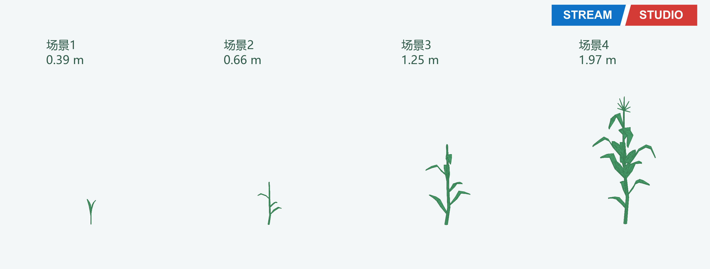
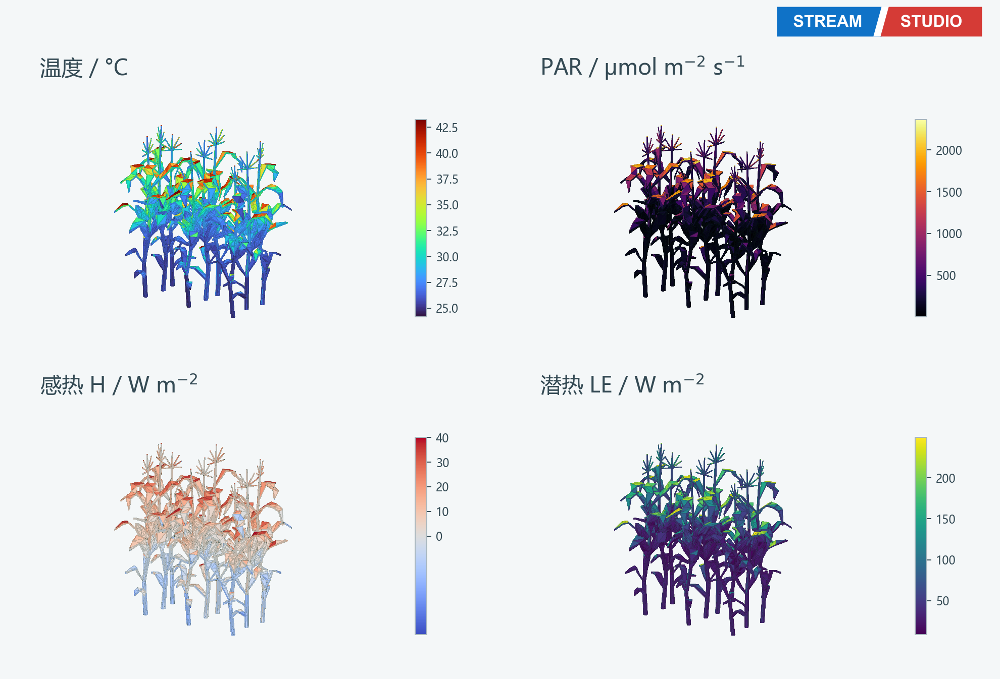
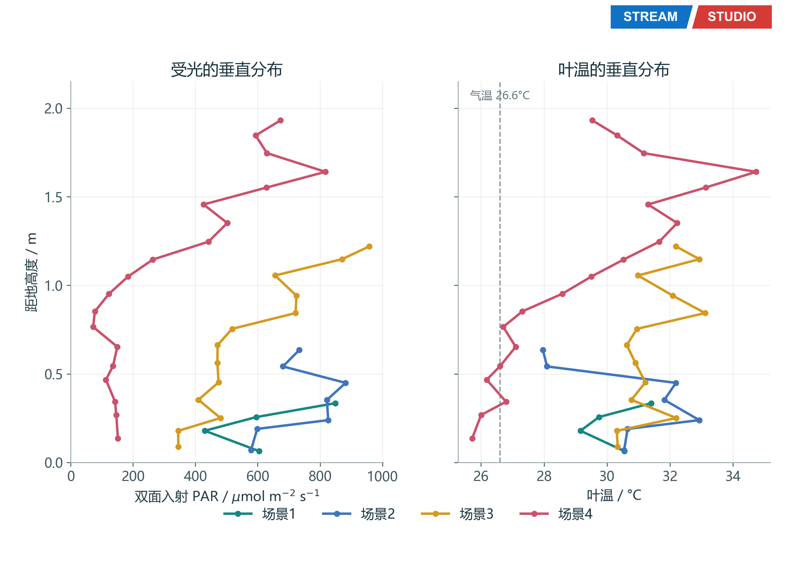
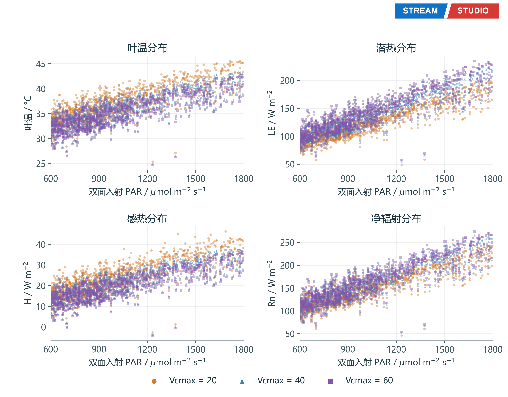
STREAM案例 | 穿透树冠，从上到下读懂雨林的光与热STREAM case | Through the canopy: reading rainforest light and heat from top to bottom
阳光落在树冠上，也沿着枝叶间隙进入林下。这个案例用STREAMSTUDIO将高大乔木、层叠叶冠和低矮灌木放进同一片三维雨林，连接多波段光线追踪、垂直光热剖面与0—24点叶温变化。Sunlight reaches the canopy and filters through gaps to the understory. This STREAMSTUDIO case brings tall trees, layered crowns and low shrubs into one 3D rainforest, connecting multiband ray tracing, vertical light and temperature profiles, and leaf temperatures over 0–24 hours.
- 分层雨林A layered rainforest
- 100×100×60米计算域中布置833个实例、七类植被，包括突出层乔木、冠层乔木、亚冠层乔木、灌木、蕨类、棕榈和藤本。60米是计算域高度，不是所有树木的高度；VoxelEB采用5米体元，展示与光线追踪保留完整几何。The 100 × 100 × 60 m domain contains 833 instances across seven vegetation types: emergent, canopy and subcanopy trees, shrubs, ferns, palms and lianas. The 60 m dimension is the domain height, not the height of every tree. VoxelEB uses 5 m voxels; visualization and ray tracing retain the full geometry.
- 多波段反射Multiband reflectance
- 七类植被分别设置略有差异的叶片反射率和透过率，计算560、665、842、1650 nm的方向反射率。每个波段使用独立颜色条；近红外平均反射率为0.3903，红光为0.0260。图像差异同时来自叶片光谱、冠层结构、阴影和地面。Seven vegetation types have slightly different leaf reflectance and transmittance. Directional reflectance is simulated at 560, 665, 842 and 1650 nm, each with an independent color scale. Mean near-infrared and red reflectance are 0.3903 and 0.0260. Spectra, canopy structure, shadows and the ground jointly shape the images.
- 垂直光热差异Vertical light and temperature gradients
- 午间12:15，中心60×60米区域按有叶片体元等权统计：林下0—5米平均叶温28.736°C，上层35—55米为30.964°C，相差约2.23°C；吸收短波分别为0.325和44.143 W/m²叶面积。这里的光照指叶片吸收短波，不等同于PAR、照度或林冠透光率。At 12:15, equally weighted occupied leaf voxels in the central 60 × 60 m area average 28.736 °C at 0–5 m and 30.964 °C at 35–55 m, a difference of about 2.23 °C. Absorbed shortwave radiation is 0.325 and 44.143 W/m² of leaf area, respectively. This quantity is not PAR, illuminance or canopy transmittance.
- 0—24点叶温Leaf temperature over 0–24 hours
- 先计算一天预热，再展示目标日25个逐小时节点。合成气温23.5—30.5°C、相对湿度75—90%，白天短波峰值800 W/m²，夜间为0。各类平均叶温在5点附近最低，15—17点达到最高。24点为次日0点实际结果；本试验未开启流体。One simulated day of warm-up precedes 25 hourly outputs from 0 to 24 h. Synthetic forcing spans 23.5–30.5 °C and 75–90% relative humidity, with shortwave radiation peaking at 800 W/m² and zero at night. Mean leaf temperatures reach minima near 05:00 and maxima at 15:00–17:00. The 24 h point is the computed result at midnight the next day. Fluid dynamics is disabled.
- 结果范围Scope of the results
- 理想化场景与合成气象，尚未进行独立观测验证。午间与全天试验使用不同驱动，应分别解读。全天49个计算节点（含预热）通过2 W/m²能量残差检查，尚未检验日周期稳态。5米体元存在类型混合，棕榈仅9个关联体元；各类采用相同C3生理设定，曲线差异反映结构、受光与光谱的共同作用，不能单独归因于树种生理。This idealized scene and synthetic forcing have not been independently validated against observations. Noon and diurnal experiments use different forcing and should be interpreted separately. All 49 time nodes, including warm-up, passed the 2 W/m² energy-residual check; periodic steady state has not been assessed. The 5 m voxels mix types, with only nine voxels associated with palms. All types share the same C3 physiology, so temperature differences cannot be attributed solely to species physiology.
Fan, T., Bian, Z., et al. (2025). STREAM: a system for tracing radiative transfer and energy balance in heterogeneous surfaces. International Journal of Applied Earth Observation and Geoinformation, 142, 104763.
DOI: 10.1016/j.jag.2025.104763
Zhong, S., Bian, Z., et al. (2026). A global system for monitoring radiative transfer and directional temperatures over heterogeneous surfaces. Remote Sensing of Environment, 346, 115635.
DOI: 10.1016/j.rse.2026.115635
文献介绍STREAM模型体系；论文中的验证不等同于本雨林案例已经完成独立观测验证。叶片光学参数、统计表、程序及源码获取入口见Word案例库。These papers describe the STREAM model family; their validation does not independently validate this rainforest case. The Word case library includes leaf optical parameters, statistical tables, and software and source-code links.
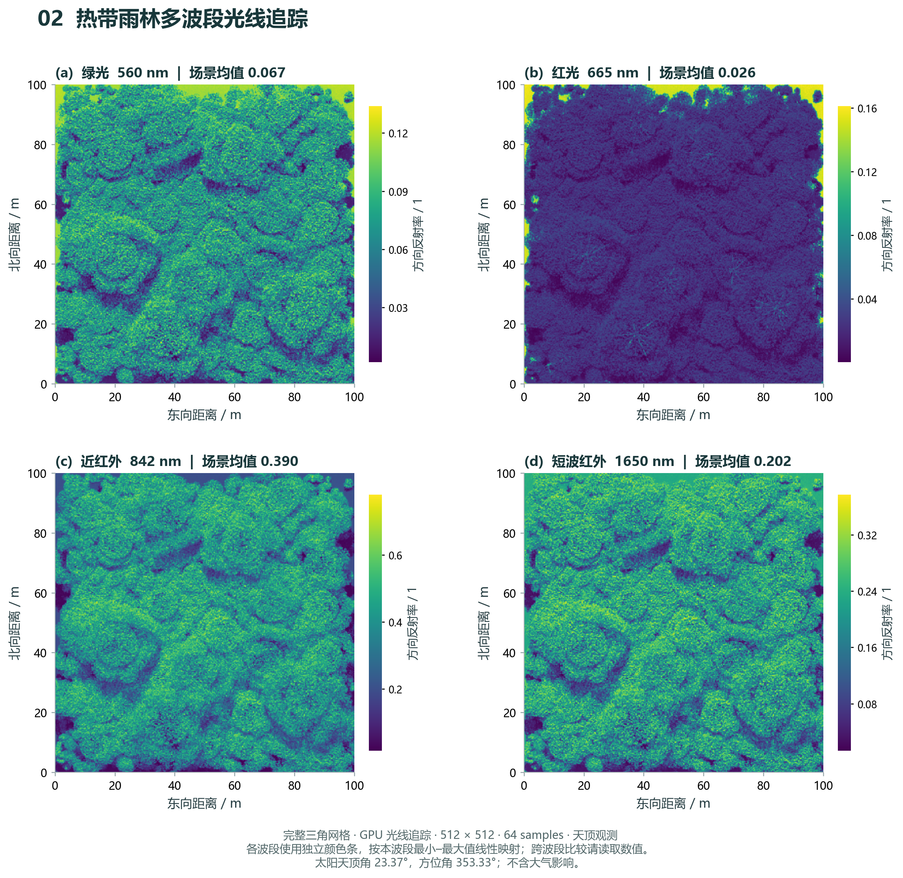
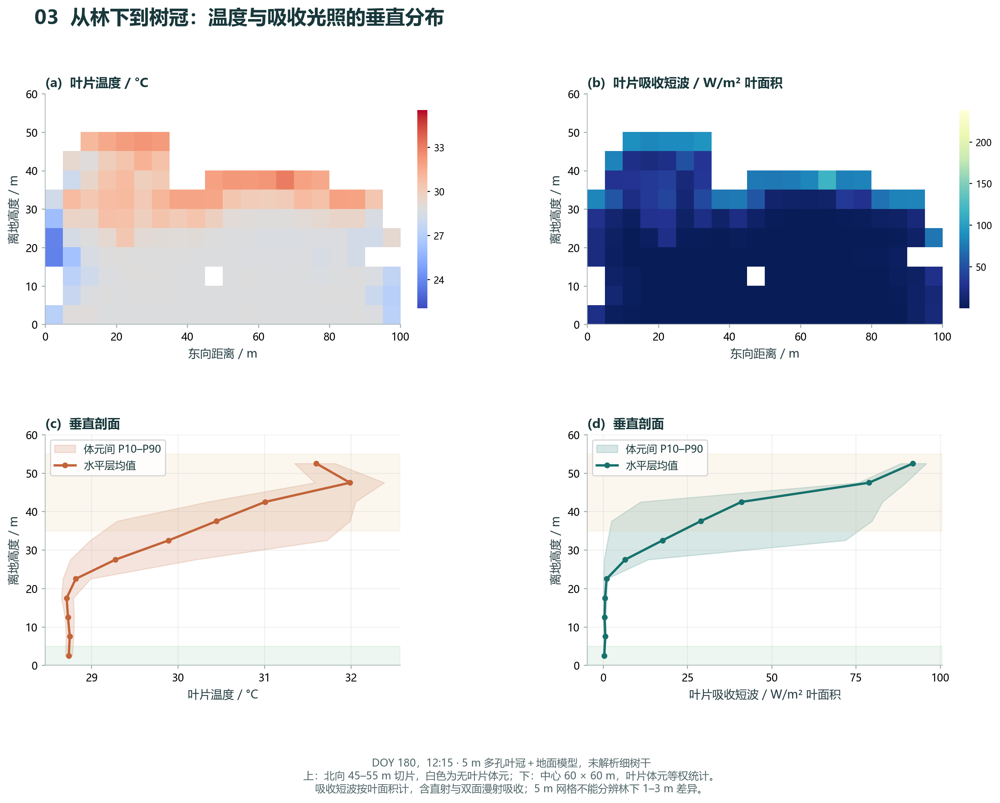
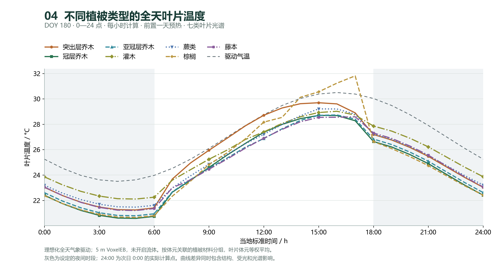
STREAM案例 | 给街区降温：浅色屋面与增加绿化STREAM case | Cooling an urban block: lighter roofs and more trees
屋面浅一点，还是多种树？在同一个300米街区中，对比基准、浅色屋面和增加绿化三种方案，分别观察屋顶、墙面、室外地面和冠层的温度变化，以及近地空气温度与风场。Lighter roofs or more trees? Compare baseline, lighter-roof and added-greening scenarios in the same 300 m urban block, examining roofs, walls, outdoor ground and tree canopies alongside near-ground air temperature and wind.
- 三种方案Three scenarios
- 浅色屋面仅将短波反射率从0.20改为0.35，热红外发射率保持0.92；绿化方案增加树木，保留基准街区几何。The lighter-roof scenario changes shortwave reflectance from 0.20 to 0.35 while keeping thermal emissivity at 0.92. The greening scenario adds trees to the baseline block.
- 同位置、同时刻比较Matched comparisons
- 室外地面排除建筑投影，保留固定的13,324个地面体元。主要效果统计采用各方案共同通过残差检查的白天7个、夜间10个时刻。Outdoor-ground comparisons exclude building footprints and use 13,324 fixed ground voxels. Main effect statistics use seven daytime and ten nighttime hours that passed residual checks in all scenarios.
- 近地空气与风Near-ground air and wind
- 图5来自原生流体输出，不是ERA5输入曲线。空气温度由表面温度松弛耦合得到，绝对值偏高，不作为主要降温指标。Figure 5 shows native fluid outputs rather than ERA5 forcing curves. Air temperature uses relaxation coupling to surface temperature; its absolute values are too high and are excluded from the main cooling indicators.
- 结果范围Scope
- 本页采用2026-11-05 v2修订图表。ERA5本地0—7时来自同一UTC日的晚间拼接；绿化方案8、11、12、13时残差未通过，日变化仍保留这些结果。未完成独立观测验证。This page uses the revised v2 figures dated 2026-11-05. Local ERA5 hours 0–7 are spliced from the evening of the same UTC day. Greening hours 8, 11, 12 and 13 failed residual checks and remain visible in the diurnal series. No independent observational validation has been completed.
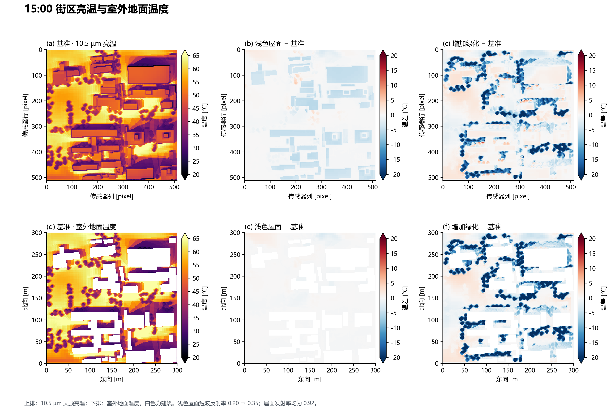
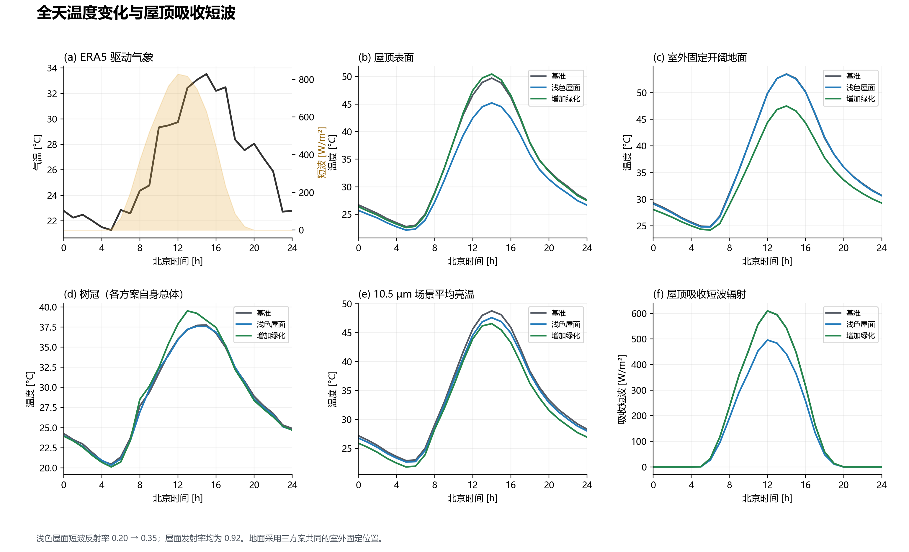
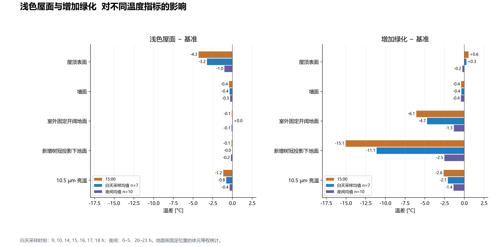
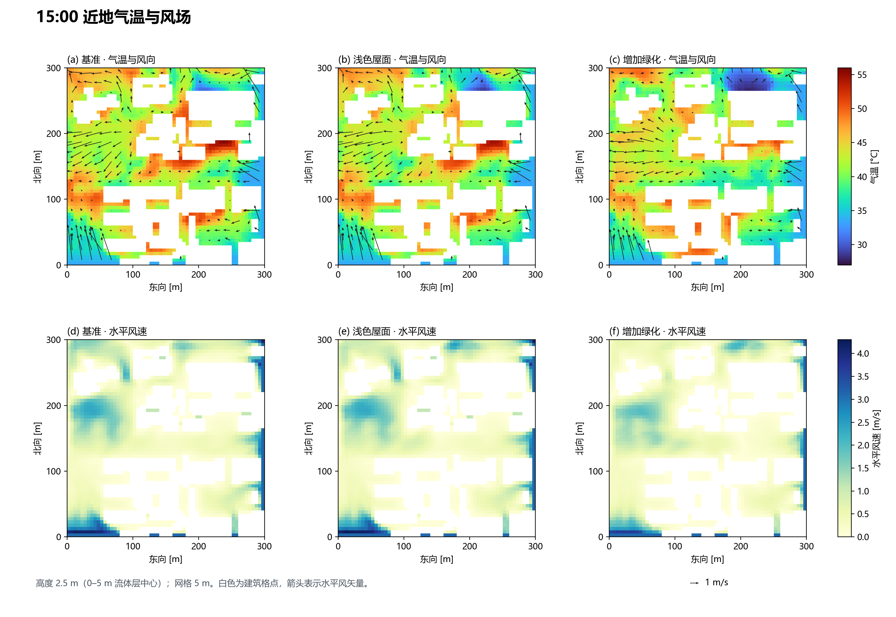
STREAM案例 | 延庆山地光热与风场STREAM case | Light, heat and wind over Yanqing terrain
把延庆站点周边的山脊、沟谷与植被搬进StreamStudio：先看三维场景，再读空气温度、风场和坡向热响应，最后用通量足迹说明站点观测的空间代表性。Bring the ridges, valleys and vegetation around the Yanqing station into StreamStudio. Explore the 3D scene, air temperature, wind and terrain-dependent thermal responses, then use flux footprints to illustrate the spatial representativeness of station measurements.
- 真实地形与场景Terrain and scene
- 区域中心116.2123°E、40.4168°N，沿用FABDEM 30米输入，海拔约461—883米。三维场景采用真实DEM与已有RGB底图，展示图钉不代表实际塔高。The scene is centered at 116.2123°E, 40.4168°N, using archived 30 m FABDEM input with elevations of approximately 461–883 m. The display combines DEM and existing RGB imagery; the pin does not represent measured tower height.
- 空气温度与风场Air temperature and wind
- 图3来自风速上限30m/s的原生流体求解，50米流体网格，离阶梯地面25米。完整计算域保持4.02×4.02千米，只展示中心2×2千米结果；不是输入气象数据。Figure 3 uses native fluid outputs with a 30 m/s speed limit and a 50 m grid, sampled 25 m above the stepped ground. The full domain remains 4.02 × 4.02 km; only the central 2 × 2 km is shown. These are solver outputs rather than meteorological forcing.
- 坡向与高程热响应Thermal response by terrain
- 图4读取2019-08-25的既有地表能量平衡结果，以NASA POWER驱动，展示地面温度而非空气温度。不同地形组同时受到遮蔽、植被和参数设置的影响。Figure 4 reads archived ground-energy-balance outputs for 2019-08-25 driven by NASA POWER. It shows ground temperature rather than air temperature, with shading, vegetation and parameter choices also affecting the terrain groups.
- 站点空间代表性Station representativeness
- 图5为2019-08-17的FFP情景，不与其他图作同时刻定量对照。来源区随风向和稳定度变化；CO₂与H₂O共用输送核，实际通量取决于不同源汇。用来说明站点代表区域，不评价选址优劣。Figure 5 is an FFP scenario for 2019-08-17, not a simultaneous quantitative comparison with the other figures. Source areas change with wind direction and stability. CO₂ and H₂O share a transport kernel, while actual fluxes depend on their respective sources and sinks. This illustrates representativeness rather than judging station siting.
- 结果范围Scope
- 中心裁切不构成收敛证明，风场参数敏感性尚未解决。不同图沿用各自归档日期与结果，属于功能演示，未完成独立观测验证。Cropping does not establish convergence, and wind-field parameter sensitivity remains unresolved. Figures retain their respective archived dates and results as a functional demonstration without independent observational validation.
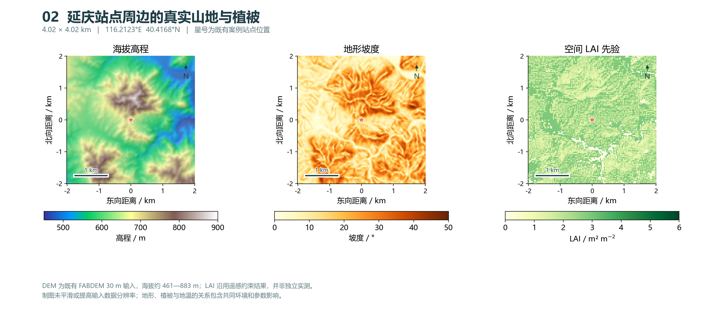
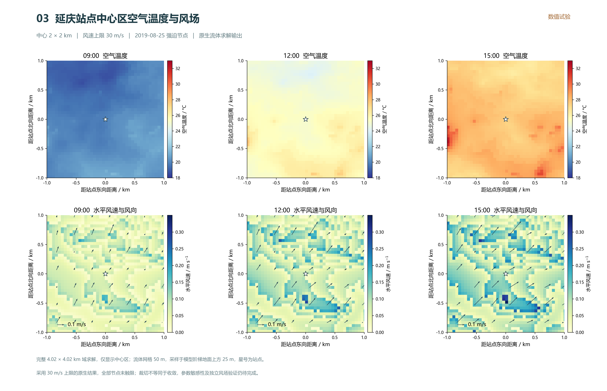
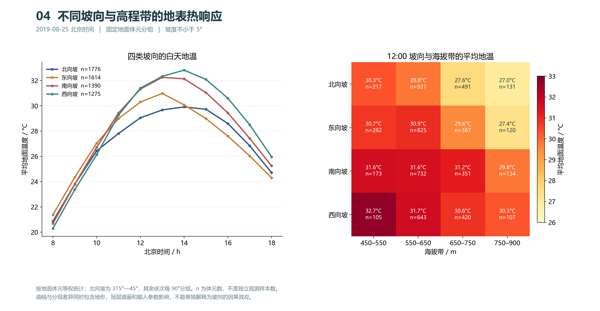
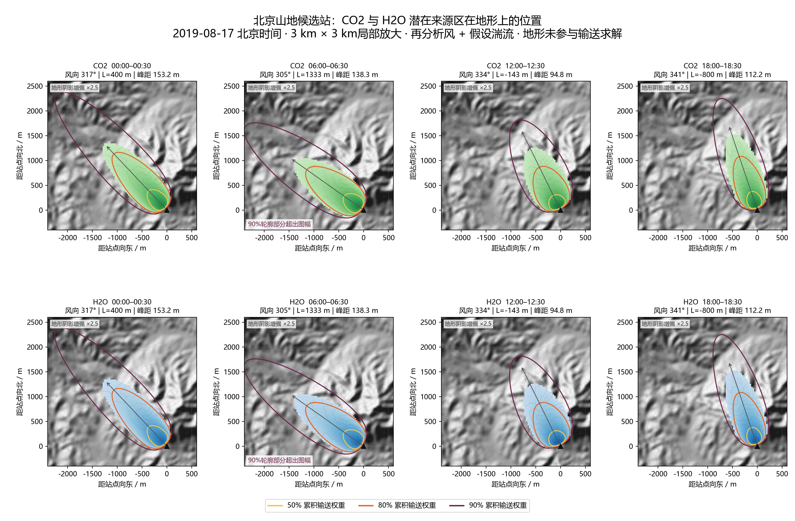